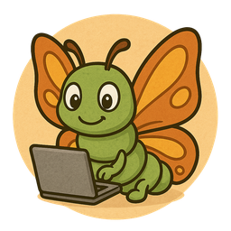

Programmieren lernen mit Spaß – für Kinder, Lehrer und Schulen weltweit.

Bugsy ist das Maskottchen von KidsCoderSandbox. Sie steht für Neugier, Lernen und Entwicklung. Wie eine Raupe, die sich in einen Schmetterling verwandelt, zeigt Bugsy, dass auch Fehler („Bugs“) nur der Anfang von etwas Neuem sind.